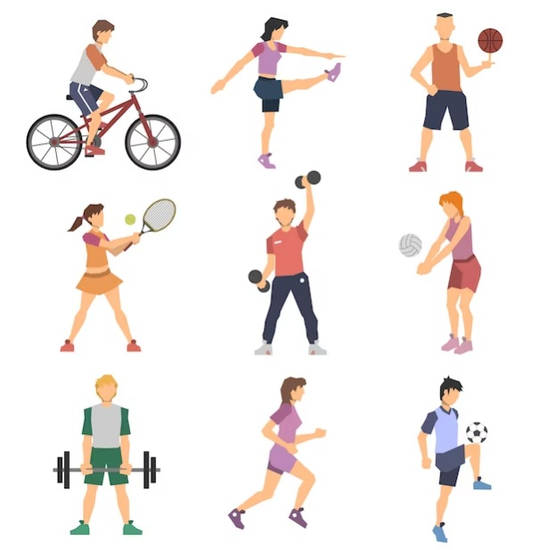

Cerita promilku dengan budget murah
Banyak pasangan yang sudah menikah mendambakan datangnya si buah hati. Terlebih jika usia perkawinannya menginjak usia yang cukup tua. begitupun kami yang 5 tahun belum dikaruniai anak. Syukurnya menginjak tahun ke-6 kami dipercaya Allaah untuk dititipi keturunan.
Bagaimanakah iktiar kami dalam mendapatkan si buah hati ? tentu ada proses perjuangan juga yang kami lalui. Disini akan kami bagi ceritanya, yang semoga bisa di ambil sisi baiknya, dan dihindari sisi buruknya. kami akan mencoba membaginya dalam beberapa bagian agar mudah dimengerti